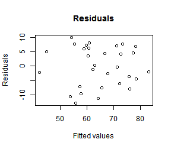
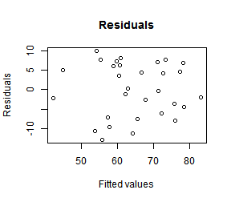

Use LRM Explorer (LRME) to quickly explore a data set, apply a linear regression model and obtain various summary statistics.
Features:
- Load and/or select data set
- View data summary
- Create linear regression model
- View model diagnostics
Model formula: Response ~ Predictor(s) + Interaction(s) + Intercept


 
